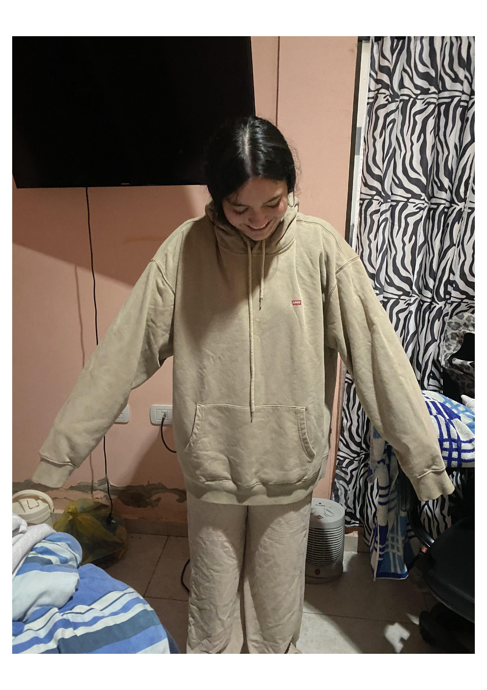
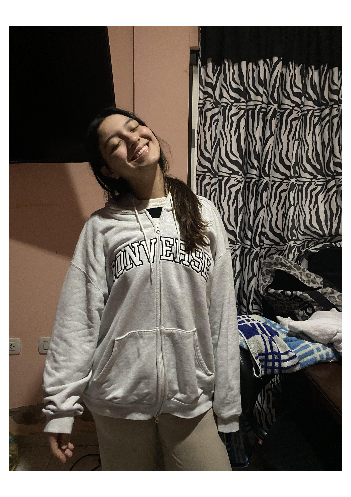
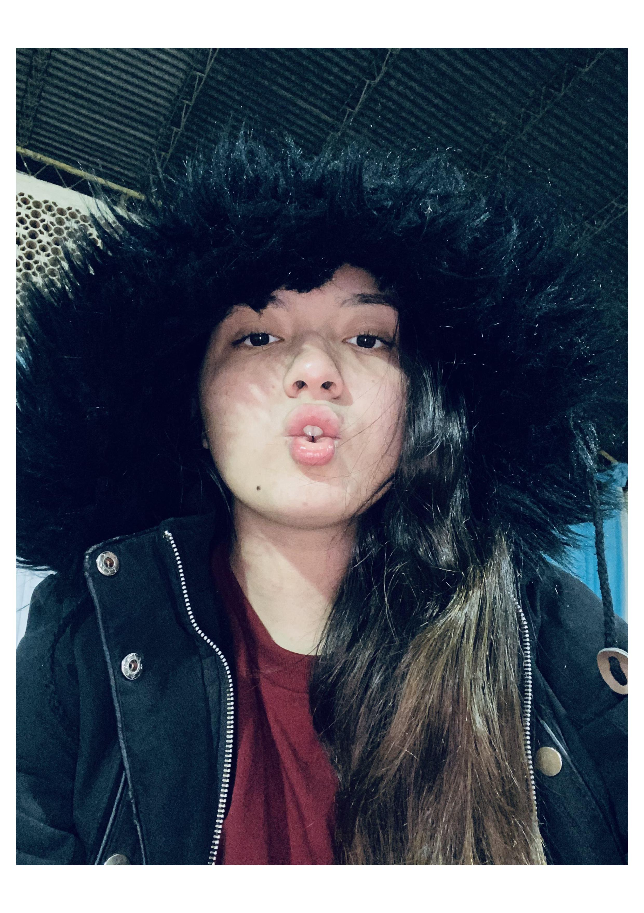
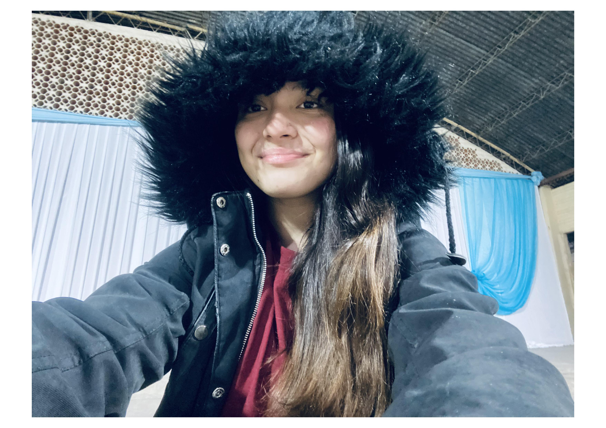
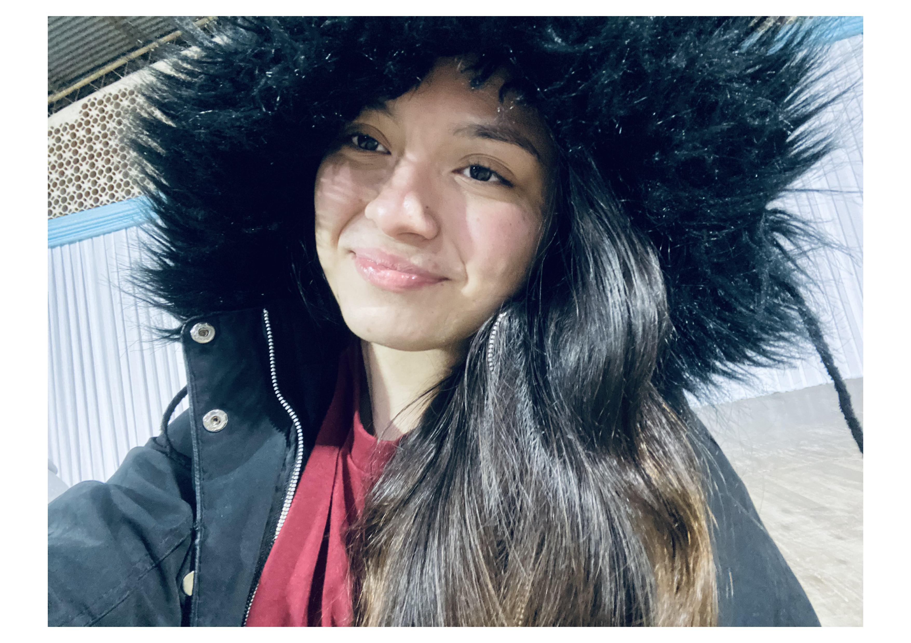
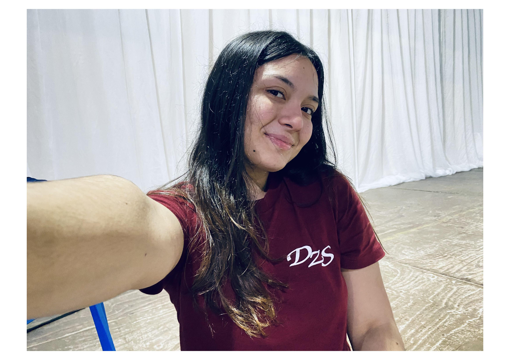
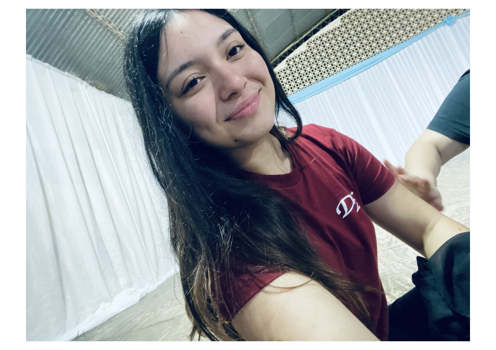

💌 Para vos, en tus 17
Hoy no es un día cualquiera. Hoy es el cumpleaños de la única que sabe estar; de la que, con sus locuras y ocurrencias, hace olvidar los problemas de los demás; de la que, sin saberlo, sana una parte de mí; de la que me hace sentir que no estoy sola; de la que, con sus silencios y sus palabras, acompaña de alguna manera; de la que no se guarda una y pelea por todo; de la que piensa que siempre va a estar sola, pero no se da cuenta de todas las personas que la quieren y la aman.
Hoy te celebro un año más de vida, otro año más acompañándote en todo momento: en los felices, en los malos y en los que son re difíciles. Y lo más importante: hoy se puede decir que renuevo mi «paciencia» para seguir aguantándote otro año más y para seguir queriéndote mucho más. Si no lo sabías, ya te quiero como a una hermanita.
Felices 17 a la que todos los días pone a prueba mi paciencia; a la que me permite ser yo misma sin juzgarme; a la que, sin querer, adopté de un ensayo a otro, solo porque empezó a no llevar su agua, sabiendo que yo le iba a dar de la mía; y a la que me aguanta siempre.
Te quiero mucho. Sabés que siempre voy a estar para vos, en todo momento. Y sabés que siempre podés contarme lo que sea, aunque a veces no sepa qué decirte.
Te quiero muchísimo. ❤️
🧥 Nuestras camperas
Un recuerdo que siempre voy a guardar.


Un recuerdo especial del día en que te tuve que prestar una campera mía porque la tuya estaba manchada y, de paso, conociste mi casa. ❤️
🤍 Nuestro último ensayo juntas
Un día que merece quedarse para siempre.

🫂 La mejor amiga de mi mejor amiga
Porque hay personas que se convierten en familia y recuerdos que nunca olvidamos; personas que nos salvan de todo.

📸 Momentos aleatorios
Fotos sin explicación, pero en las que salís hermosa.





✨ Nuestro último acto juntas
Un par de fotos tuyas del último acto que compartimos.